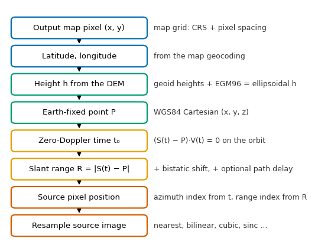
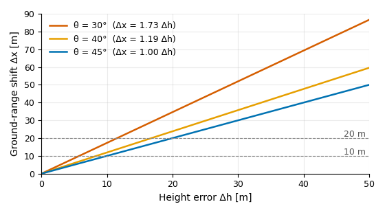

| SAR Concepts: Range-Doppler Terrain Correction in Depth | |
Terrain correction moves every pixel of a radar-geometry image to its map position, using the orbit, the image timing and a DEM. Knowing how it works tells you which output settings matter, how large the remaining position errors are, and when another geocoding method is better. The geometry itself is explained in SAR geometry.
Terrain Correction works backwards, from the map to the image (Figure 1). For every output map pixel it:
fD(t) = 2 V(t) · (P − S(t)) / (λ |P − S(t)|) = 0
S(t) and V(t) are the sensor position and velocity, λ the wavelength and fD the Doppler frequency. SNAP interpolates the orbit state vectors to every image line (Lagrange polynomial through the 8 nearest vectors), brackets the sign change of fD by bisection over the image lines and refines t0 by linear interpolation between the two bracketing lines. A point with no sign change inside the image time span is outside the scene.
tc = t0 + R / c
with c the speed of light (R/c is about 2.8 ms, or roughly 20 m along track, for R = 850 km). If the metadata says the processor already applied this correction, nothing is added, except for Sentinel-1: its processor corrects for one reference range only, so SNAP adds the range-dependent residual. R is then recomputed at tc, and the optional atmospheric path delay is added to it;

Figure 1. Backward geocoding of one output map pixel in Range-Doppler Terrain Correction.
Every map pixel gets a value, even in layover (several map pixels read the same radar pixels) and shadow (they read noise).
WGS84(DD) is geographic latitude/longitude. WKT and EPSG codes
are accepted; AUTO:42001 selects the UTM zone of the scene centre. Use a projected CRS to measure
areas or distances.A geocoded pixel is only as accurate as the inputs of the Range-Doppler solution:
| Error source | Typical size | Effect on position |
|---|---|---|
| Orbit | Sentinel-1 requirement: 5 cm (precise), 10 cm (restituted) | about the same on the ground |
| DEM height error Δh | metres to tens of metres (canopy, buildings, voids, age) | Δx ≈ Δh / tan θ in ground range (Figure 2) |
| Wrong vertical datum | geoid undulation N, −105 m to +85 m | N / tan θ, e.g. 57 m for N = 40 m at 35° |
| Atmospheric path delay | 3 to 4 m one-way slant range | about 5 to 7 m in ground range |
| Azimuth timing (bistatic, instrument, processing) | about 2 m for Sentinel-1 | same in azimuth |
| Solid Earth tides | up to about 20 cm in slant range within a data take | same order |
θ is the incidence angle; the formula holds for flat ground, and the shift is larger on slopes facing the radar. An overestimated height makes the geocoder read the image too close to near range, so features appear displaced away from the radar (towards far range); an underestimated height displaces them towards the radar. For Sentinel-1, geocoding the delivered product with a precise orbit is typically accurate to better than one pixel. Correcting path delay, tides and timing, for example with ETAD, removes most of the remaining metre-level biases.

Figure 2. Horizontal shift caused by a height error, Δx = Δh / tan θ, for incidence angles of 30°, 40° and 45°. Dashed lines: one and two 10 m pixels.
Validating. The reference method is corner reflectors with surveyed positions: compare each reflector's peak in the geocoded image with its coordinates. Otherwise overlay an orthophoto or vector data (coastlines, roads), or compare ascending and descending results: an offset that grows with height points to a DEM or datum error.
| Operator | How it finds the source pixel | Use it when |
|---|---|---|
| Ellipsoid Correction GG | interpolates the product's latitude, longitude and slant-range-time tie-point grids; does not use the orbit or a DEM | quick looks, ocean and sea ice |
| Ellipsoid Correction RD | Range-Doppler with one height, avg_scene_height, for the whole scene | flat terrain at a known height, no DEM available |
| Range-Doppler Terrain Correction | Range-Doppler with a DEM height per pixel | the standard for land, stacks and mosaics; needs a good orbit |
| SAR-Simulation Terrain Correction | simulates a SAR image from the DEM, matches it to the real image with cross-correlation GCPs, and applies the fitted warp polynomial before resampling | older or poorly annotated products whose orbit or timing errors exceed a pixel, in terrain with enough relief to match |
| GSLC Terrain Correction | Range-Doppler, keeping and correcting the phase | InSAR on a map grid (see GSLC) |
GG and RD apply different azimuth bias corrections (GG adds 2R/c to the tie-point time for most missions; RD adds R/c), so do not mix their outputs in one stack. SAR-Simulation Terrain Correction fails over flat or featureless scenes, where the simulated image has nothing to match.
"Apply radiometric normalization" writes a Sigma0 band computed by the mission's calibrator. For most
missions (e.g. ASAR, ERS, RADARSAT-2, ALOS, ICEYE) it contains a factor sin θproj, the sine of the
projected local incidence angle, following Kellndorfer et al. (1998); for Sentinel-1 it is the ellipsoid-based
σ0 from the product calibration table, with no local-angle factor. Gamma0 and Beta0 are virtual bands derived from that
Sigma0 and an incidence angle; for Sentinel-1 the derived Gamma0/Beta0 therefore mix an ellipsoid
σ0 with a local angle and are not a consistent normalisation; use Terrain Flattening. This one-angle
correction cannot handle foreshortened pixels that collect
several DEM facets. For terrain-flattened γ0T (Small, 2011), run Terrain Flattening in
radar geometry before Terrain Correction and keep this option off; see RTC and
Radiometry.
Terrain-Correction, suffix _TC):
demName default Copernicus 30m Global DEM; demResamplingMethod and
imgResamplingMethod default BILINEAR_INTERPOLATION; pixelSpacingInMeter
and pixelSpacingInDegree default 0 (automatic); mapProjection default
WGS84(DD); alignToStandardGrid (off) snaps the grid to
standardGridOriginX/Y; nodataValueAtSea ("Mask out areas without elevation", on);
applyAPDCorrection (off) adds a standard-atmosphere dry tropospheric delay (Saastamoinen model).elevation (m), latitude, longitude,
incidenceAngleFromEllipsoid, localIncidenceAngle,
projectedLocalIncidenceAngle (all degrees) and layoverShadowMask (8-bit; 1 = layover,
2 = shadow, 3 = both).saveSelectedSourceBand (on) writes the geocoded source bands. SLC i/q pairs are detected
(i² + q²) before interpolation and written as Intensity_*. outputComplex
resamples i and q without phase correction; for phase work use GSLC. Coregistered
InSAR stacks with no band selection are geocoded as complex automatically.See also SAR geometry, DEMs and height references, Orbits and ETAD, RTC and Resampling. Workflows: GRD to Terrain-Flattened Backscatter.